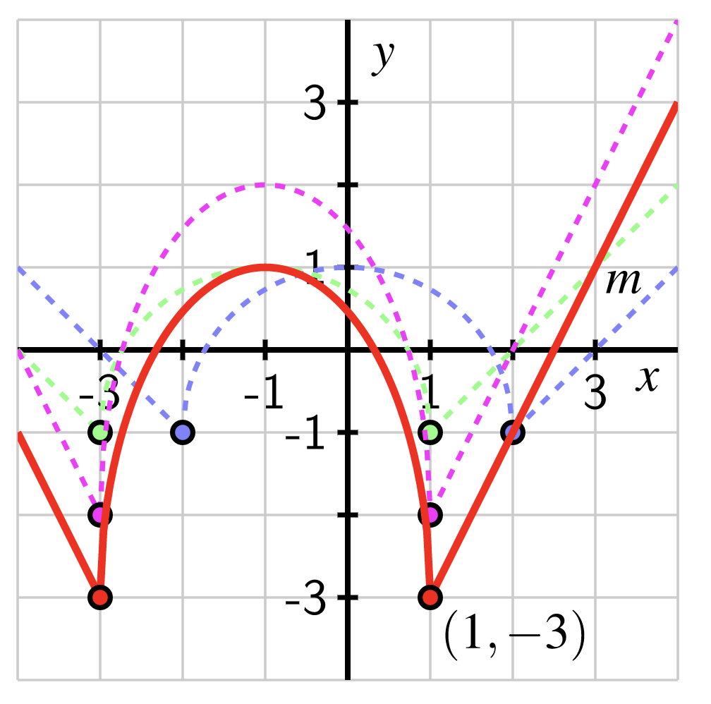

Having become more or less acquainted with a few families of functions (linear functions, power functions, polynomials, rational functions, etc.), we now try to extend our knowledge to various arithmetic combinations of these basic types.
In this section we will focus on a particularly simple case of such combinations. Namely, we will consider the following types of function operations, called function transformations:
where \(c\) is a constant. In each case above, the function \(g\) above is the result of a “shifting” or “scaling” by the constant \(c\text{;}\) and furthermore, this shifting/scaling is applied either to the output\(f(x)\) (the “outside” of the function), or to the input\(x\) (the “inside” of the function). What exactly is the result of this shifting and scaling, and what difference does it make to do so on the inside versus the outside of the function?
The Desmos interactive in Figure 1.6.2 allows you to explore the graphical relationship between an original function \(f\) and four different type of transformations of \(f\text{:}\)
Transforming \(f(x)\) to \(f(x)\pm b\) adds/subtracts \(b\) units to every output of \(f(x)\text{.}\) This means that the graph of \(y=f(x)\) shifts up or down vertically \(b\) units everywhere, to become the graph of \(y=f(x)+b\) or \(y=f(x)-b\text{,}\) as illustrated by the red and green graphs, respectively, shown in Figure 1.6.4 below.
If we instead add or subtract a constant to the independent variable and transform \(f(x)\) to \(f(x\pm a)\text{,}\) the graph shifts left or right horizontally by \(a\) units, as illustrated in the green and red graphs shown in Figure 1.6.6 below.
If we instead transform \(f(x)\) by multiplication to \(df(x)\text{,}\) then the graph of \(y=f(x)\) expands or contracts vertically by a factor of \(d\) to become the graph of \(y=df(x)\text{,}\) as shown in the red and green graphs in Figure 1.6.8.
In contrast, if we do the same transformation to the independent variable and transform \(f(x)\) to \(f(cx)\text{,}\) this contracts or expands the graph of \(y=f(x)\) by a factor of \(c\) in the horizontal direction, as illustrated in the red and green graphs in Figure 1.6.10.
Reflections: Note that in Examples Example 1.6.7 and Example 1.6.9, the values of \(c\) and \(d\) used were positive. What happens if we multiply \(x\) or \(f(x)\) by a negative number? We can answer that question just by looking at what happens when we multiply by \(-1\text{.}\)
Changing \(f(x)\) to \(-f(x)\) transforms all positive outputs into negative outputs, and vice versa. The graph of \(y=f(x)\) is then reflected across the \(x\)-axis to become the graph of \(y=-f(x)\text{,}\) as shown in the red graph in Figure 1.6.12.
If we instead multiply the independent variable by \(-1\text{,}\) then we obtain a reflection across the \(y\)-axis, as shown in the graph graph in Figure 1.6.12.
Now if we want to transform \(f(x)\) to \(f(-2x)\text{,}\) for example, we can transform \(f(x)\) first to \(f(2x)\) and then by reflection to \(f(-2x)\text{.}\)
Consider the function \(r\) given in Figure 1.6.15 below. Describe in words how the function \(m(x) = 2r(x+1)-1\) is the result of three transformations of \(r(x)\text{.}\) Does the order in which these transformations occur matter? Why or why not?
There are three basic transformations involved: a vertical shift of 1 unit down, a horizontal shift of 1 unit left, and a vertical stretch by a factor of 2. To understand the order in which these transformations are applied, it’s essential to remember that a function is a process that converts inputs to outputs.
By the algebraic rule for \(m\text{,}\)\(m(x) = 2r(x+1)-1\text{.}\) In words, this means that given an input \(x\) for \(m\text{,}\) we do the following processes in this particular order:
add 1 to \(x\) and then apply the function \(r\) to the quantity \(x+1\text{;}\)
We can see the graphical impact of these algebraic steps by taking them one at a time. Note that in each of the following figures, we track the point \((2,-1)\) from the original function.
In Figure 1.6.16, we see the function that results from a shift of 1 unit left of the function \(y=r(x)\) in Figure 1.6.15. The tracked point first moves left 1 unit to \((1,-1)\text{.}\) (Each time we take an additional step, we will de-emphasize the preceding function by having it appear in lighter color and dashed.)
Continuing, we now consider the function \(y=2r(x+1)\text{,}\) which results in a vertical stretch away from the \(x\)-axis by a factor of 2, as seen in Figure 1.6.17. The tracked point is stretched vertically by a factor of 2 away from the \(x\)-axis to \((1,-2)\text{.}\)
Finally, we arrive at \(y=2r(x+1)-1\) by subtracting 1 from the previous graph; this of course is a vertical shift of \(-1\) units, and produces the graph of \(m\) shown in red in Figure 1.6.18. The tracked point is shifted 1 unit down to the point \((1,-3)\text{.}\)

Figure1.6.18.The function \(m(x)=2r(x+1)-1\text{.}\)
While there are some transformations that can be executed in either order (such as the combination of a horizontal translation and a vertical translation, in other situations order matters. In this example, we have to apply the vertical stretch before applying the vertical shift, Algebraically, this is because
The quantity \(2r(x+1)-1\) multiplies the function \(r(x+1)\) by 2 first (the stretch) and then the vertical shift follows; the quantity \(2[r(x+1)-1]\) shifts the function \(r(x+1)\) down 1 unit first, and then executes a vertical stretch by a factor of 2. In the latter scenario, the point \((1,-1)\) that lies on \(r(x+1)\) gets transformed first to \((1,-2)\) and then to \((1,-4)\text{,}\) which is not the same as the point \((1,-3)\) that lies on \(m(x)=2r(x+1)-1\text{.}\)
Checkpoint1.6.19.Vertical and horizontal translations, stretches, and reflections.
The figure that follows shows a piece of the graph of a parabola with five marked points. Sketch graphs for each of the given transformations. On each graph, mark the new coordinates of the five marked points
Some graphs do not change under certain transformations. For example, the graph of \(f(x) = x^2\) shown in Figure 1.6.21 below remains the same if we reflect it across the \(y\)-axis. We say that this function has \(y\)-axis symmetry.
As another example, the graph of \(g(x) = x^3\) shown in Figure 1.6.22 below remains the same if we reflect it first across the \(y\)-axis and then across the \(x\)-axis. This double-reflection across the \(x\)- and \(y\)-axis is equivalent to rotation around the origin by \(180^\circ\text{.}\) Take a moment to experiment with this: on a piece of scrap paper, draw a smiley face or some other picture. Flip the paper vertically and then horizontally (or horizontally and then vertically). This gives you the same result as rotating the paper by 180 degrees. A function that is preserved under the transformation of \(180^\circ\) rotation is said to have \(180^\circ\)rotational symmetry.
These types of symmetries are also called even symmetry and odd symmetry, since power functions with even powers all have \(y\)-axis symmetry and power functions with odd powers all have rotational symmetry. Because graphical reflections correspond to multiplication by \(-1\text{,}\) we can describe functions with even and odd symmetry algebraically as follows:
Note that many functions are neither even nor odd. In fact, it is quite hard for a function to be either even or odd, since this would require the graph to have one of these two specific symmetries.
and so we can see that \(h(-x)\neq h(x)\text{,}\) thus \(h(x)\) is not even. Similarly, since \(-h(x) = -x^2-x\text{,}\) we can also see that \(h(-x)\neq -h(x)\text{,}\) thus \(h(x)\) is not odd. Consequently, the function \(h(x) = x^2+x\) has neither \(y\)-axis symmetry nor rotational symmetry. Confirm this for yourself by graphing \(h(x)\) using Desmos or a graphing calculator.
Sketch a graph that has neither \(y\)-axis symmetry nor \(180^\circ\) rotational symmetry. Congratulations! You have drawn the graph of a function that is neither even nor odd.
We first determine algebraically whether each function satisfies the definition of even or odd (or if it does not) and then verify graphically.
To determine whether \(f\) is even or odd (or neither) we must calculate \(f(-x)\) and determine if it is equal to \(f(x), -f(x)\text{,}\) or neither. If \(f(-x)=f(x)\text{,}\) it is even, and if \(f(-x)=-f(x)\text{,}\) it is odd. We have
We follow the same procedure to determine whether \(g(x)\) is even, odd, or neither. If \(g(-x)=g(x)\text{,}\) it is even, if \(g(-x)=-g(x)\text{,}\) it is odd, and if neither of those two things is true, then it is neither even nor odd. Well
We can see in Figure 1.6.27 that \(f(x) = \frac{1}{x}\) has \(180^\circ\) rotational symmetry about the origin, which confirms that \(f(x)\) is an odd function. In [cross-reference to target(s) "fig_taalmanpage72b" missing or not unique], we see that \(g(x) = x^4+x^2\) has reflectional symmetry across the \(y\)-axis, confirming that \(g(x)\) is an even function. Lastly, in [cross-reference to target(s) "fig_taalmanpage72c" missing or not unique], we see that \(h(x) = \frac{2+x}{1+x^2}\) has neither type of symmetry, confirming that \(h(x)\) is neither even nor odd.
This form arises from taking the parabola \(f(x)=x^2\) and applying appropriate transformations to obtain any other parabola as follows:
First, shift \(f(x)=x^2\) horizontally via \(f(x-h)\text{.}\) If the parabola must shift to the right, use a positive value for \(h\text{.}\) If the parabola must shift to the left, use a negative value for \(h\text{.}\)
Next, stretch the parabola vertically via \(af(x-h)\text{.}\) If the parabola must shrink, use a value of \(a\) that is between \(-1\) and \(1\text{.}\) If the parabola must be reflected across the \(x\)-axis, use a negative value of \(a\text{.}\)
Finally, shift the parabola vertically via \(af(x-h)+k\text{.}\) If the parabola must shift up, use a positive value for \(k\text{.}\) If the parabola must shift down, use a negative value for \(k\text{.}\)
The vertex of the parabola has shifted left by one unit (\(h=-1\)) and up by nine units (\(k=9\)) from the graph of \(y=x^2\text{,}\) so the vertex of \(p(x)\) is in the second quadrant at the point \((-1,9)\text{.}\) The coefficient of \(-3\) has reflected the graph over the \(x\)-axis, so \(p(x)\) opens downward. Thus we know that \(p(x)\) must have 2 \(x\)-intercepts. See if you can find them algebraically.
Recall from Exercise [cross-reference to target(s) "ex_quadraticparameters" missing or not unique] that we explored how the parameters \(a, b\text{,}\) and \(c\) impact the graph of \(y=ax^2+bx+c\text{.}\) Experiment with the Desmos graph at
if you do not remember. We see in this exercise how the values of \(a, b\text{,}\) and \(c\) are obtained based on the location of the vertex and width of the parabola.